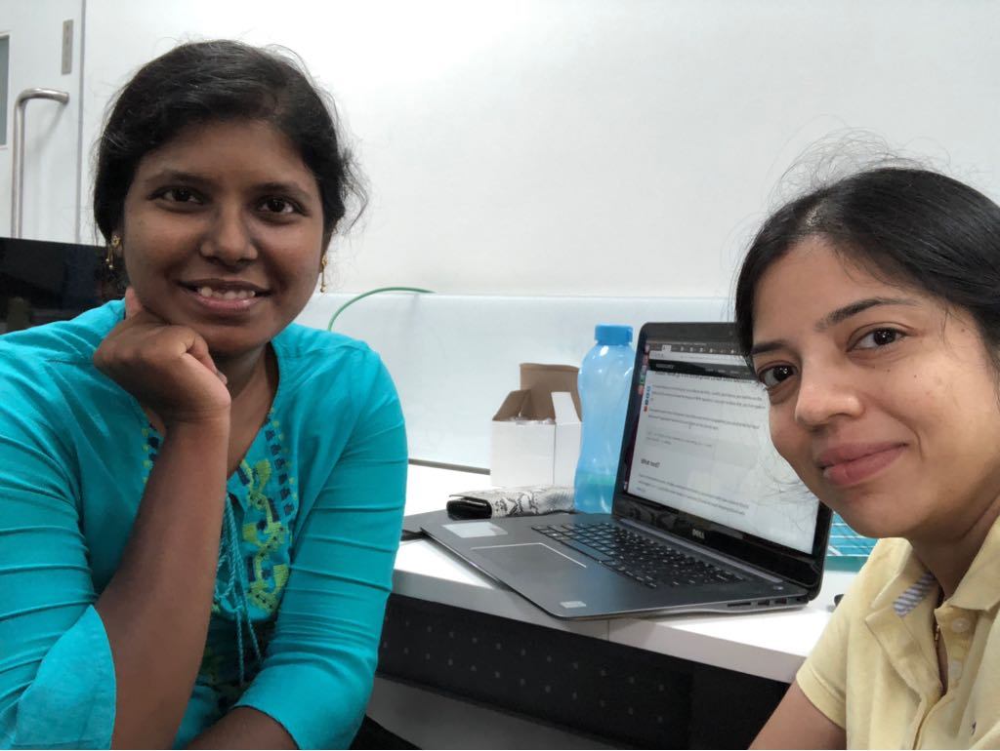
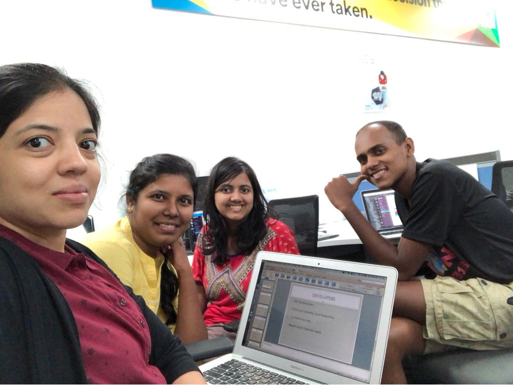

WTF Hackathon - My first hackathon experience
It all started when i saw the Chargebee's WTF hackathon event - hackathon run for women, by women. It sounded really cool and I was really excited to give it a try. Immediately i pinged Bhavani and asked her if i can be in her team. With Bhavani, Naren and Kritika onboard, all of them were my tech meet-up friends - team iKeepLog was all ready to rock and roll.
Why did i want to go to the hackathon?
There is more to hackathon than just coding. I have always been a mentor for young students in tech competitions and the thought of being a participant myself thrilled me. How often do you have such events that too for women, which is also open to all from diverse backgrounds? A great shout out to Chargebee and the team for organizing this!! You get to learn new things, meet new people and you get to see what it is like to build something from an idea to an MVP over the weekend. Oh yeah, for a person who loves building things and overcoming the challenges that crop up, WTF women hackathon seemed to be the right place for me!
How did i prepare myself for the hackathon?
To state that i was nervous will be an understatement. My teammates are all fulltime developers and i knew that i had to do my basic homework in order to overcome my imposter syndrome. When I learnt from my teammates that we would be using Python and Django for the backend, I decided to be part of coding the backend. I promised myself that i will learn Django before the event and i was on a learning spree. I djangoed a whole week, working on simple projects - to understand function based views, class based views and so on. As with any programming language, the more i learnt about the difficult concepts I felt I knew less about it. But I was ready to face the challenge and learn at every opportunity.s
My experience at the hackathon
It was the most fun and exciting part of the event. The teams came , presented their ideas and explained their project. They were really proud of what they had built in a day. It was inspiring to see how these group of kids in the age group 7 - 14 years came together to build something with technology. They proved that with the right platform, tools and mentors they can build something and create a difference.
I had the least coding experience in Python and Django in my team. The first thoughts that ran in my mind - Hsow will i contribute to the project? How will it be like to work with experienced developers? How is it all going to turn out? Will i feel left out ? Thanks to my supporting teammates, it all vanished the moment the hackathon took off! We all started working on iKeepLog - a chatbot in your organization’s messaging platform that pings you at regular intervals to get your status update. This is the first time i am working with django, Python and Postgres in a project. I was quite nervous but my teammates Bhavani, Kritika and Naren were so supportive and encouraging. I was coding with Naren on the backend (Python and Django) while Kritika was working on the frontend (React) and Bhavani was working on her Slackbot in Python. Good communication, positive spirit and hard work helped us in getting our product all up and ready. Our mentor Ms. Vaishnavi helped us fine-tune our business model. It is important to think about the bigger picture - how our product will solve the problem and who will gain value from the product. Her inputs really helped us in collecting our thoughts and put together a great presentation.
Winning your first hackathon
We all know that hackathons aren’t really about winning prizes. Hackathons are ideal events for disruption and imagination. It is all about learning new things, working with cool group of individuals and trying to build something cool with awesome technology. How do you feel when you get rewarded for working on something cool with a bunch of amazing friends? And when it is your first hackathon, I am at a loss for words to describe the feeling. I am glad that I attended the hackathon and many thanks to my friends - Bhavani, Kritika and Naren and the Chargebee team. To all new budding programmers out there - Are you looking out for ways to improving your programming skills? Go to a hackathon and have fun learning!